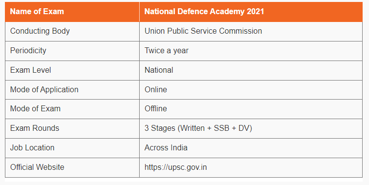

Many of us prefer a life less ordinary and those who do are truly commendable. In this article we will discuss the ways one can get inducted into air force after passing his 10+2 Examination....
NDA Exam is conducted twice every year by UPSC (Union Public Service Commission) to select eligible candidates for admission to the elite National Defence Academy and Naval Academy
The written examination is conducted by the Union Public Service Commission for admission to the Army, Navy, and Air Force wings of the NDA and Indian Naval Academy Course
